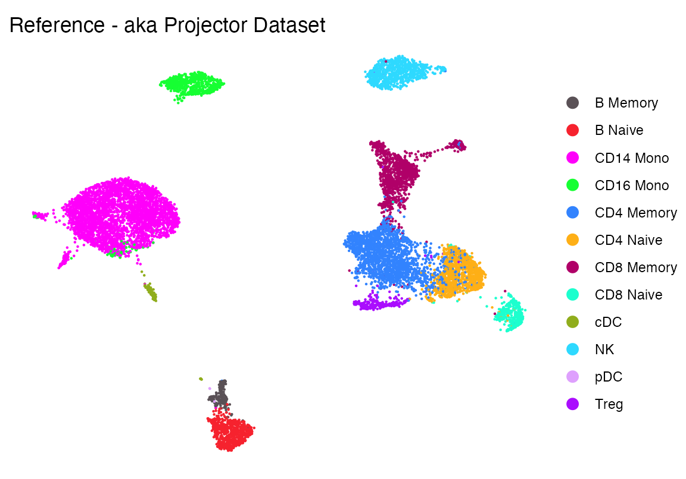
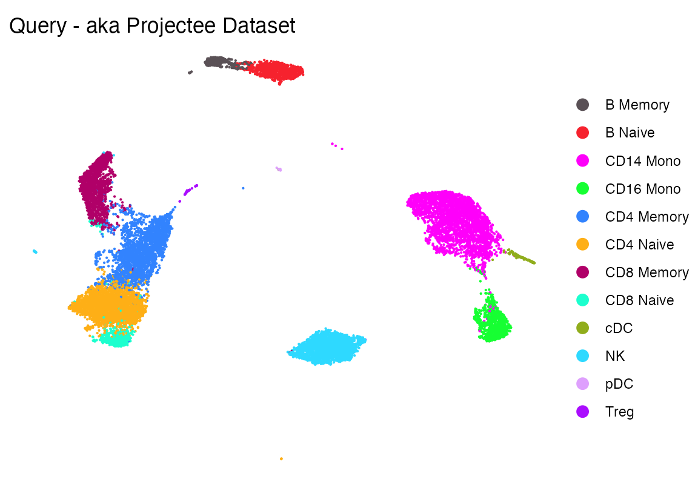
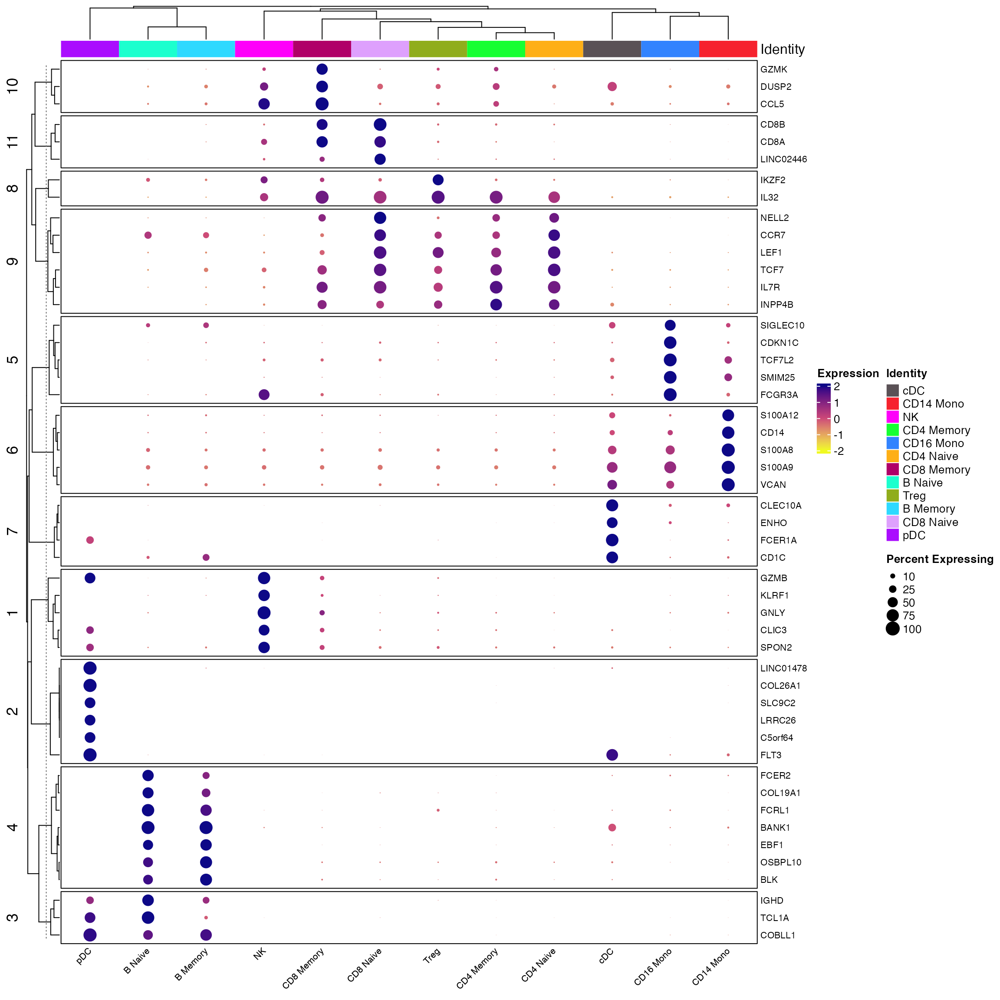
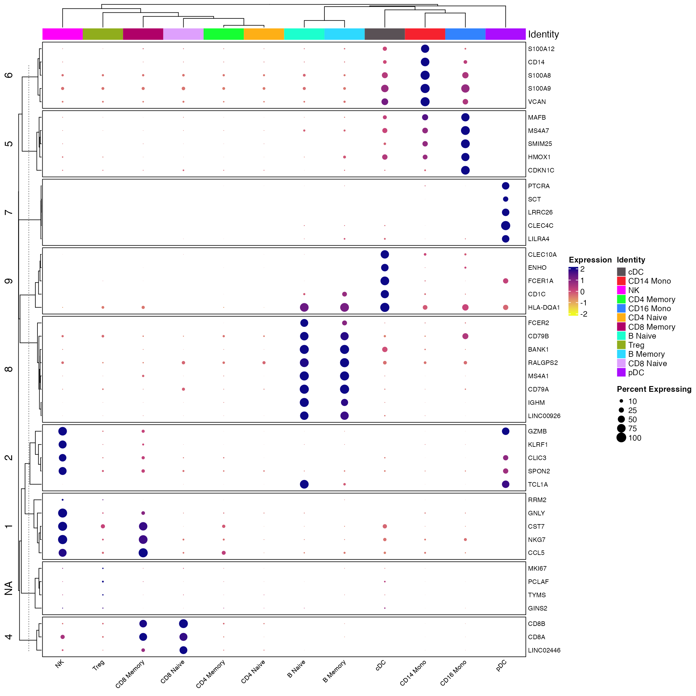
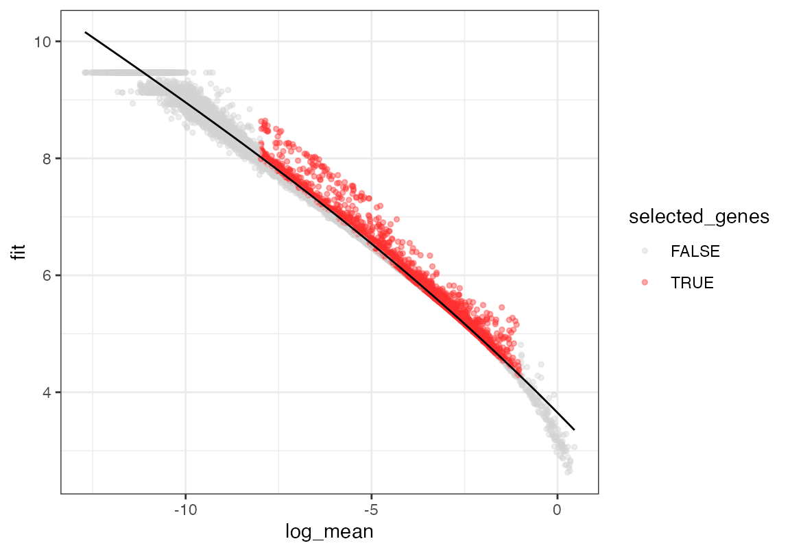
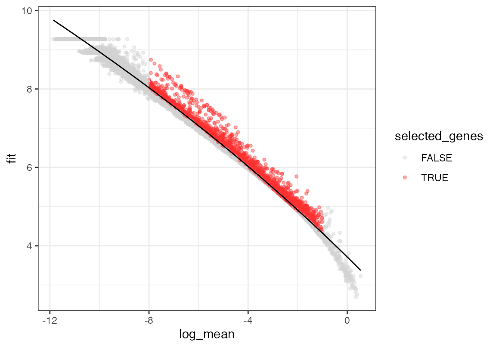
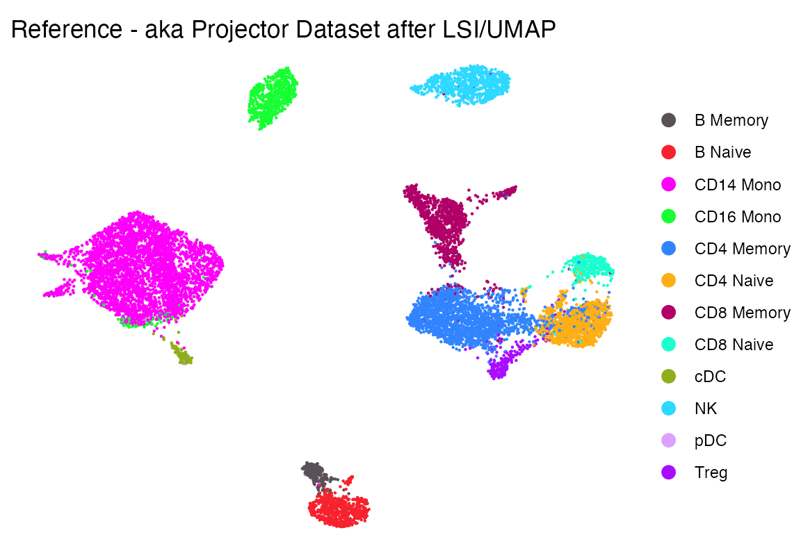
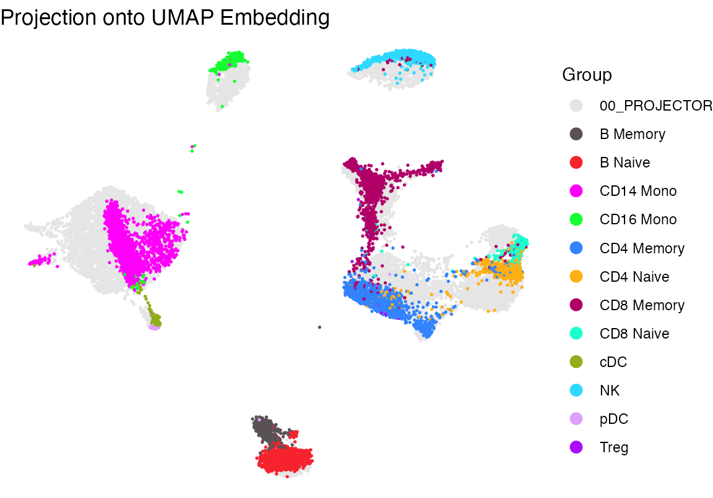
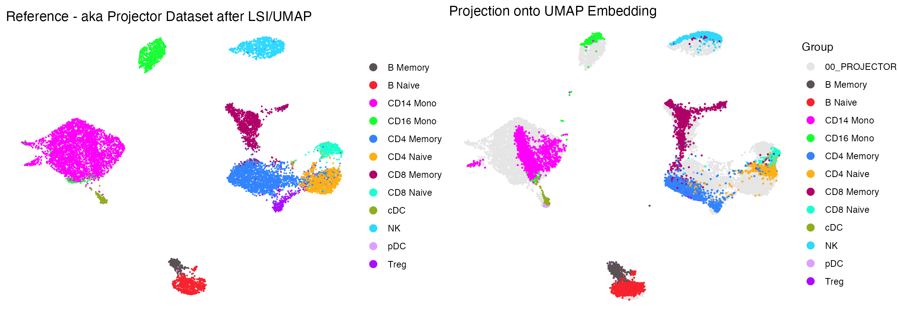

How to use UMAP transform on a single cell dataset (Seurat) using iterative Latent Semantic Indexing
2024-1-23
ProjectDataLSIWorkflow.RmdNote that this code was inspired by and adapted from:
ArchR: An integrative and scalable software package for single-cell chromatin accessibility analysis #’ Jeffrey M. Granja, M. Ryan Corces, Sarah E. Pierce, S. Tansu Bagdatli, Hani Choudhry, Howard Y. Chang, William J. Greenleaf #’ doi: https://doi.org/10.1101/2020.04.28.066498
Installing flscuts
First, ensure you have the devtools R package installed,
which allows you to install packages from GitHub. If
devtools is installed, you can easily install using the
following command:
devtools::install_github("furlan-lab/flscuts")Loading data
In this section, we’ll load two Seurat objects, fix the celltypes so they harmonize, and create some colors.
# Load required packages
suppressPackageStartupMessages({
library(flscuts)
library(Seurat)
library(monocle3)
library(viewmastR)
library(ggplot2)
library(scCustomize)
library(tidyr)
})Load reference dataset and make some colors
seur <- readRDS(file.path(ROOT_DIR1, "240926_final_object.RDS"))
# Make some colors
cols1 <- as.character(pals::polychrome()[c(1,3:13)])
names(cols1) <- levels(factor(seur$celltype))
cols2 <- c("00_PROJECTOR"="grey90", cols1)
DimPlot_scCustom(seur, group.by = "celltype", colors_use = cols1)+theme_void()+ggtitle("Reference - aka Projector Dataset")
Load query dataset
seu <-readRDS(file.path(ROOT_DIR3, "240926_5p_seu.RDS"))
DimPlot_scCustom(seu, group.by = "celltype", colors_use = cols1)+theme_void()+ggtitle("Query - aka Projectee Dataset")
Make sure labels are correct
In this code, we show that the labels given to the reference and query cells are correct.
First the reference
Idents(seur) <- seur$celltype
all_markers <- FindAllMarkers(object = seur) %>%
Add_Pct_Diff() %>% dplyr::filter(pct_diff > 0.6)
top_markers <- Extract_Top_Markers(marker_dataframe = all_markers, num_genes = 5, named_vector = FALSE,
make_unique = TRUE)
Clustered_DotPlot(seurat_object = seur, features = top_markers, colors_use_idents = cols1, k=11, plot_km_elbow = F)
And the query
Idents(seu) <- seu$celltype
all_markers <- FindAllMarkers(object = seu) %>%
Add_Pct_Diff() %>% dplyr::filter(pct_diff > 0.6)
top_markers <- Extract_Top_Markers(marker_dataframe = all_markers, num_genes = 5, named_vector = FALSE,
make_unique = TRUE)
Clustered_DotPlot(seurat_object = seur, features = top_markers, colors_use_idents = cols1, k=11, plot_km_elbow = F)
Find shared features
In this section we identify similarly variant genes that are common across the two datasets
# Calculate and plot gene dispersion in query dataset
seu <- calculate_gene_dispersion(seu)
seu <- select_genes(seu, top_n = 10000, logmean_ul = -1, logmean_ll = -8)
plot_gene_dispersion(seu)
vgq <- get_selected_genes(seu)
# Repeat the process for the reference dataset
seur <- calculate_gene_dispersion(seur)
seur <- select_genes(seur, top_n = 10000, logmean_ul = -1, logmean_ll = -8)
plot_gene_dispersion(seur)
vgr <- get_selected_genes(seur)
# Find common genes
vg <- intersect(vgq, vgr)Iterative Latent Sematic Indexing
The overall goal is to use “iterative” (only 1 iteration) LSI with the same feature set on both datasets to create a reduction that can be used with umap transform
First, we run iterative LSI on the reference. We use an arbitrary number of LSI components and the common variant features found above. Setting run_umap to true will enable this function to run, saving the UMAP model to the object.
#iterative LSI
comps <- 25 #Number of PCs for clustering
seur<-iterative_LSI(seur, num_dim = comps, num_features = length(vg), resolution = c(1e-3), verbose = T, starting_features = vg, run_umap = T)## Modularity Optimizer version 1.3.0 by Ludo Waltman and Nees Jan van Eck
##
## Number of nodes: 11290
## Number of edges: 448690
##
## Running Louvain algorithm...
## Maximum modularity in 10 random starts: 0.9996
## Number of communities: 3
## Elapsed time: 0 secondsThe UMAP performed on LSI looks like this. Which is reasonable
p1 <- DimPlot(seur, group.by = "celltype", cols = cols1)+theme_void()+ggtitle("Reference - aka Projector Dataset after LSI/UMAP")
p1
Next we take the “projectee”, (aka the query data we want to project) and the “projector” aka reference and run the following function which creates an output containing the coordinates for how the cells from the projectee mapped using the same features+LSI/UMAP reduction procedure mapped the reference cells. In this example, the cells we had previously seen
res <- project_data(projector = seur, projectee = seu, reduced_dim = "lsi", embedding = "umap")
p2 <- plot_projection(res, seur, seu, projectee_col = "celltype")+scale_color_manual(values = cols2)+theme_void()+ guides(color = guide_legend(override.aes = list(size = 3)))
p2
Side by side this looks pretty good with the exception of Tregs, which get a bit lost.
cowplot::plot_grid(p1, p2)
Appendix
## R version 4.3.2 (2023-10-31)
## Platform: aarch64-apple-darwin20 (64-bit)
## Running under: macOS Ventura 13.5.2
##
## Matrix products: default
## BLAS: /Library/Frameworks/R.framework/Versions/4.3-arm64/Resources/lib/libRblas.0.dylib
## LAPACK: /Library/Frameworks/R.framework/Versions/4.3-arm64/Resources/lib/libRlapack.dylib; LAPACK version 3.11.0
##
## locale:
## [1] en_US.UTF-8/en_US.UTF-8/en_US.UTF-8/C/en_US.UTF-8/en_US.UTF-8
##
## time zone: America/Los_Angeles
## tzcode source: internal
##
## attached base packages:
## [1] stats4 stats graphics grDevices utils datasets methods
## [8] base
##
## other attached packages:
## [1] Matrix_1.6-3 tidyr_1.3.1
## [3] scCustomize_2.1.1 ggplot2_3.5.0
## [5] viewmastR_0.2.3 monocle3_1.3.7
## [7] SingleCellExperiment_1.24.0 SummarizedExperiment_1.32.0
## [9] GenomicRanges_1.54.1 GenomeInfoDb_1.41.1
## [11] IRanges_2.36.0 S4Vectors_0.40.2
## [13] MatrixGenerics_1.14.0 matrixStats_1.2.0
## [15] Biobase_2.62.0 BiocGenerics_0.48.1
## [17] Seurat_5.0.0 SeuratObject_5.0.1
## [19] sp_2.1-3 flscuts_0.1.0
##
## loaded via a namespace (and not attached):
## [1] fs_1.6.3 spatstat.sparse_3.0-3
## [3] bitops_1.0-7 lubridate_1.9.3
## [5] RcppMsgPack_0.2.3 httr_1.4.7
## [7] RColorBrewer_1.1-3 doParallel_1.0.17
## [9] backports_1.4.1 tools_4.3.2
## [11] sctransform_0.4.1 utf8_1.2.4
## [13] R6_2.5.1 lazyeval_0.2.2
## [15] uwot_0.1.16 GetoptLong_1.0.5
## [17] withr_3.0.0 gridExtra_2.3
## [19] progressr_0.14.0 cli_3.6.2
## [21] textshaping_0.3.7 Cairo_1.6-2
## [23] spatstat.explore_3.2-6 fastDummies_1.7.3
## [25] labeling_0.4.3 sass_0.4.8
## [27] spatstat.data_3.0-4 ggridges_0.5.6
## [29] pbapply_1.7-2 pkgdown_2.0.7
## [31] systemfonts_1.0.5 foreign_0.8-85
## [33] dichromat_2.0-0.1 parallelly_1.37.0
## [35] maps_3.4.2 limma_3.58.1
## [37] pals_1.8 rstudioapi_0.15.0
## [39] generics_0.1.3 shape_1.4.6.1
## [41] gtools_3.9.5 ica_1.0-3
## [43] spatstat.random_3.2-2 dplyr_1.1.4
## [45] ggbeeswarm_0.7.2 fansi_1.0.6
## [47] abind_1.4-5 lifecycle_1.0.4
## [49] yaml_2.3.8 edgeR_4.0.16
## [51] snakecase_0.11.1 recipes_1.0.10
## [53] SparseArray_1.2.4 Rtsne_0.17
## [55] paletteer_1.6.0 grid_4.3.2
## [57] promises_1.2.1 crayon_1.5.2
## [59] miniUI_0.1.1.1 lattice_0.21-9
## [61] beachmat_2.18.1 cowplot_1.1.3
## [63] mapproj_1.2.11 magick_2.8.3
## [65] pillar_1.9.0 knitr_1.45
## [67] ComplexHeatmap_2.18.0 rjson_0.2.21
## [69] boot_1.3-28.1 future.apply_1.11.1
## [71] codetools_0.2-19 leiden_0.4.3.1
## [73] glue_1.7.0 data.table_1.15.0
## [75] vctrs_0.6.5 png_0.1-8
## [77] spam_2.10-0 gtable_0.3.4
## [79] rematch2_2.1.2 assertthat_0.2.1
## [81] cachem_1.0.8 gower_1.0.1
## [83] xfun_0.42 prodlim_2023.08.28
## [85] S4Arrays_1.2.0 mime_0.12
## [87] tidygraph_1.3.1 survival_3.5-7
## [89] timeDate_4032.109 pbmcapply_1.5.1
## [91] iterators_1.0.14 hardhat_1.3.1
## [93] lava_1.7.3 statmod_1.5.0
## [95] ellipsis_0.3.2 fitdistrplus_1.1-11
## [97] ipred_0.9-14 ROCR_1.0-11
## [99] nlme_3.1-163 bit64_4.0.5
## [101] RcppAnnoy_0.0.22 bslib_0.6.1
## [103] irlba_2.3.5.1 rpart_4.1.21
## [105] vipor_0.4.7 KernSmooth_2.23-22
## [107] colorspace_2.1-0 Hmisc_5.1-1
## [109] nnet_7.3-19 ggrastr_1.0.2
## [111] tidyselect_1.2.0 bit_4.0.5
## [113] compiler_4.3.2 htmlTable_2.4.2
## [115] BiocNeighbors_1.20.2 hdf5r_1.3.9
## [117] desc_1.4.3 DelayedArray_0.28.0
## [119] plotly_4.10.4 checkmate_2.3.1
## [121] scales_1.3.0 lmtest_0.9-40
## [123] stringr_1.5.1 digest_0.6.34
## [125] goftest_1.2-3 presto_1.0.0
## [127] spatstat.utils_3.1-0 minqa_1.2.6
## [129] rmarkdown_2.25 XVector_0.42.0
## [131] htmltools_0.5.7 pkgconfig_2.0.3
## [133] base64enc_0.1-3 lme4_1.1-35.1
## [135] sparseMatrixStats_1.14.0 highr_0.10
## [137] fastmap_1.1.1 rlang_1.1.3
## [139] GlobalOptions_0.1.2 htmlwidgets_1.6.4
## [141] UCSC.utils_1.1.0 shiny_1.8.0
## [143] DelayedMatrixStats_1.24.0 farver_2.1.1
## [145] jquerylib_0.1.4 zoo_1.8-12
## [147] jsonlite_1.8.8 BiocParallel_1.36.0
## [149] ModelMetrics_1.2.2.2 BiocSingular_1.18.0
## [151] RCurl_1.98-1.14 magrittr_2.0.3
## [153] Formula_1.2-5 GenomeInfoDbData_1.2.11
## [155] dotCall64_1.1-1 patchwork_1.2.0
## [157] munsell_0.5.0 Rcpp_1.0.12
## [159] viridis_0.6.5 reticulate_1.35.0
## [161] pROC_1.18.5 stringi_1.8.3
## [163] miloR_1.10.0 ggraph_2.2.0
## [165] zlibbioc_1.48.0 MASS_7.3-60
## [167] plyr_1.8.9 parallel_4.3.2
## [169] listenv_0.9.1 ggrepel_0.9.5
## [171] forcats_1.0.0 deldir_2.0-2
## [173] graphlayouts_1.1.0 splines_4.3.2
## [175] tensor_1.5 circlize_0.4.16
## [177] locfit_1.5-9.8 igraph_2.0.2
## [179] spatstat.geom_3.2-8 RcppHNSW_0.6.0
## [181] reshape2_1.4.4 ScaledMatrix_1.10.0
## [183] evaluate_0.23 ggprism_1.0.4
## [185] nloptr_2.0.3 foreach_1.5.2
## [187] tweenr_2.0.3 httpuv_1.6.14
## [189] RANN_2.6.1 purrr_1.0.2
## [191] polyclip_1.10-6 future_1.33.1
## [193] clue_0.3-65 scattermore_1.2
## [195] ggforce_0.4.2 janitor_2.2.0
## [197] rsvd_1.0.5 xtable_1.8-4
## [199] RSpectra_0.16-1 later_1.3.2
## [201] class_7.3-22 viridisLite_0.4.2
## [203] ragg_1.2.7 tibble_3.2.1
## [205] memoise_2.0.1 beeswarm_0.4.0
## [207] cluster_2.1.4 timechange_0.3.0
## [209] globals_0.16.2 caret_6.0-94
getwd()## [1] "/Users/sfurlan/develop/flscuts/vignettes"